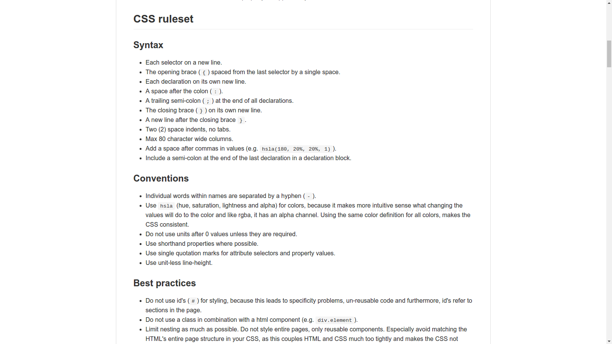
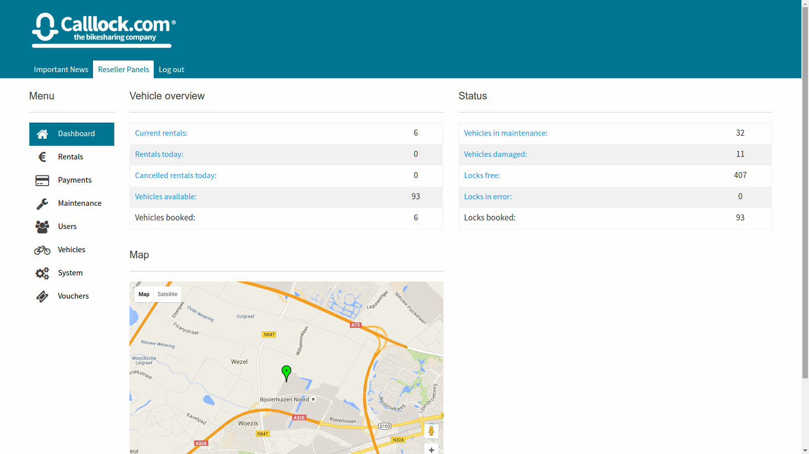
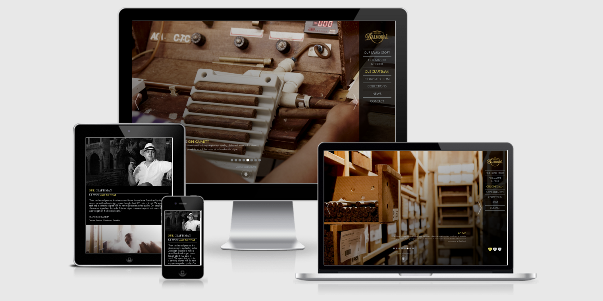
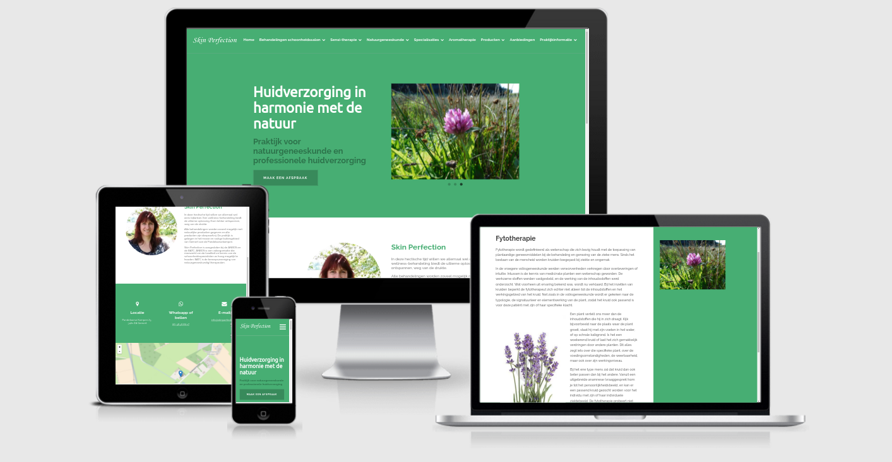
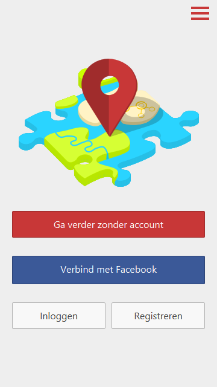
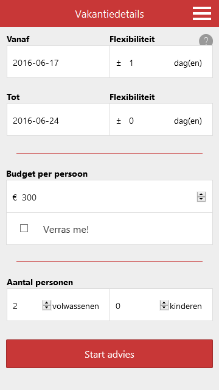
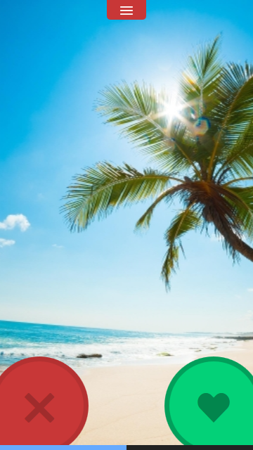
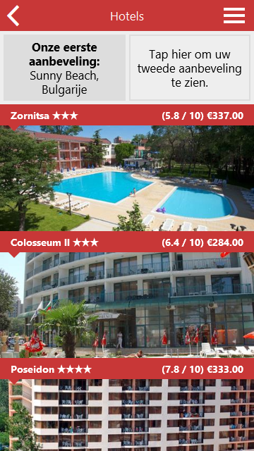
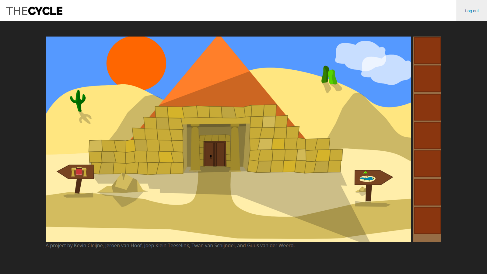

Projects
A few of my projects.

ElysiumCSS, a SASS/CSS style guide.

Calllock Customer control panel, a control panel for resellers of Calllock's vehicle share service, built with Laravel, AngularJS and Sass.

Balmoral cigars, a website built with PHP, HTML5 and Sass.

Skin Perfection, a website built on Wordpress.

CS Kochsysteme was a website which had a lot of problems and had become very hard to maintain.
I've rewritten the front-end from scratch in a maintainable, logical and consistent architecture, fixing the problems and making it responsive along the way.
Unfortunately, I was limited to copying the old design, and in the end, a better design came along.




Travelmatch, a smartphone/tablet app that creates a TravelDNA based on the liking and disliking of travel images.
The mobile app was built with Cordova, AngularJS and Less and communicated via REST with a Django server.

The Cycle, a point and click game built in HTML5, illustrations are made by me using Inkscape, and I developed a large part of the front-end of the game.